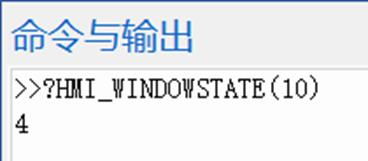

|
类型 |
窗口操作指令 |
|
描述 |
获取窗口状态。 20161112以后固件版本支持。 |
|
语法 |
value= HMI_WINDOWSTATE (winid [, tablenum]) winid：Hmi文件里面窗口编号 tablenum：存储窗口的位置和大小，顺序存储 posx, posy, sizex, sizey 返回值对应的窗口类型： ZPLC_WIN_TYPE_AUTO = 0，没有显示 ZPLC_WIN_TYPE_TOP = 1，顶层窗口 ZPLC_WIN_TYPE_BOTTOM = 2，底层窗口 ZPLC_WIN_TYPE_BASE = 4，基本窗口 ZPLC_WIN_TYPE_KEYBOARD = 5，软键盘. ZPLC_WIN_TYPE_POP = 6，弹出窗口 ZPLC_WIN_TYPE_MENU = 7，菜单窗口，自动关闭 |
|
适用控制器 |
支持RTHmi |
|
例子 |
 读取结果：4，表示10号窗口为基本窗口 |